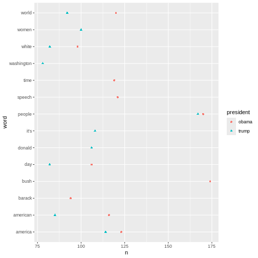
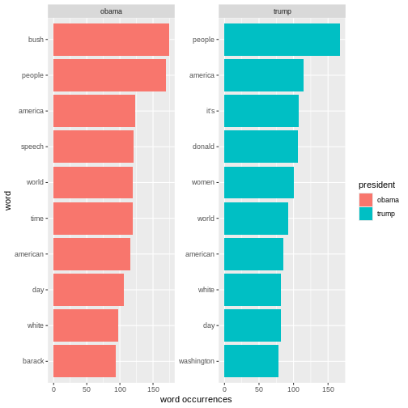

Content from Introduction
Last updated on 2025-03-17 | Edit this page
Overview
Questions
- What is text mining?
- What is stop words?
- What is tokenisation?
- What is tidytext?
Objectives
- Explain what text mining is
- Explain what stop words is
- Explain what tokenisation is
- Explain what tidytext is
What is text mining?
Text mining is the process of extracting useful information and knowledge from text. Text mining tools allow the user to analyse large samples of texts and visualise the results.
Through these analyses you can gain insights into a collection of text to large to read with the naked eye.
Before you can carry out your analysis the text need to be transformed into a form that makes it easier to work with for a machine.
Stopwords
Text often contains words that hold no particular meaning. These are called stop words and are found throughout the text. Since stop words rarely contribute to the understanding of the text, it is a good idea to remove them before analysing the text.
Example of removing stopwords
Tidytext and tokenisation
To be able to analyse a text it needs to be machine-readable. In this course we will follow the concepts of tidytext.
Tidy text
The tidy text concept is developed by Silge and Robinson (reference tilføjes - https://www.tidytextmining.com) and applies the principles from the tidy data to text.
The tidy data framework, principles are:
- Each variable forms a column.
- Each observation forms a row.
- Each type of observational unit forms a table.
Applying these principles to text data leads to a format that is easily manipulated, visualised, and analysed using standard data science tools.
Tidytext represents the text by breaking it down into smaller pieces, such as sentences, words and letters. This process is called tokenisation.
Tokenisation is language independent, as long as the language uses spaces between words.
Here is an example of tokenisation on word-level.
Example of tokenization
Key Points
- Know what text mining is
- Know what stop words is
- What data are we working with
- Know what tidytext is
Content from Loading data
Last updated on 2025-03-17 | Edit this page
Overview
Questions
- Which packages are needed?
- How to load the dataset?
- How to inspect the dataset?
Objectives
- Get to know the packages that are needed
- Load in the dataset
- Inspect the dataset
Getting startet
When performing text analysis in R, the built-in functions in R are
not sufficient. It is therefore necessary to install som additional
packages. In this course we will be using tidyverse,
tidytext and tm.
R
install.packages("tidyverse")
install.packages("tidytext")
install.packages("tm")
library(tidyverse)
library(tidytext)
library(tm)
Getting data
Begin by downloading the dataset called articles.csv.
Place the downloaded file in the data/. You can do this directly from R
by copying and pasting this in your terminal.
R
download.file("https://raw.githubusercontent.com/KUBDatalab/R-textmining_new/main/episodes/data/articles.csv", "data/articles.csv", mode = "wb")
After downloading the data you need to load the data in R’s memory
using the function read_csv()
R
articles <- read_csv("data/articles.csv", na = c("NA", "NULL", ""))
Data description
The dataset contains newspaper articles from the Guardian. The harvested articles were published on the first inauguration day of each of the two presidents. Inclusion criteria were that the articles had to contain the name of the relevant president, the word “inauguration” and a publication date similar to the inaugration date.
The original dataset contained lots of variables that are irrelevant within the parameters of this course. The following variables were kept:
idpresidenttextweb_publication_datepillar_name
Taking a quick look at the data
R
head(articles)
OUTPUT
# A tibble: 6 × 5
id president text web_publication_date pillar_name
<dbl> <chr> <chr> <dttm> <chr>
1 1 obama "Obama inauguration: We will… 2009-01-20 19:16:38 News
2 2 obama "Obama from outer space Whet… 2009-01-20 22:00:00 Opinion
3 3 obama "Obama inauguration: today's… 2009-01-20 10:17:27 News
4 4 obama "Obama inauguration: Countdo… 2009-01-19 23:01:00 News
5 5 obama "Inaugural address of Presid… 2009-01-20 16:07:44 News
6 6 obama "Liveblogging the inaugurati… 2009-01-20 13:56:40 News R
glimpse(articles)
OUTPUT
Rows: 137
Columns: 5
$ id <dbl> 1, 2, 3, 4, 5, 6, 7, 8, 9, 10, 11, 12, 13, 14, 15…
$ president <chr> "obama", "obama", "obama", "obama", "obama", "oba…
$ text <chr> "Obama inauguration: We will remake America, vows…
$ web_publication_date <dttm> 2009-01-20 19:16:38, 2009-01-20 22:00:00, 2009-0…
$ pillar_name <chr> "News", "Opinion", "News", "News", "News", "News"…Key Points
- Packages must be installed and loaded
- The dataset needs to be loaded
- The dataset can be inspected with different functions
Content from Tokenisation and stopwords
Last updated on 2025-03-17 | Edit this page
Overview
Questions
- How is text prepared for analysis?
Objectives
- Be able to tokenise a text
- Be able to remove stopword from text
Tokenisation
Since we are working with text mining we focus on the
text coloumn. We do this because the coloumn contains the
text from articles.
To tokenise a coloumn, we use the functions
unnest_tokens() from the tidytext-package. The
function gets two arguments. The first one is word. This
defines that the text should be split up by words. The second argument,
text, defines the column that we want to tokenise.
R
articles_tidy <- articles %>%
unnest_tokens(word, text)
Tokenisation
The result is 118,269 rows. The reason is that the
text-column is replaced by a new column named
word. This columns contains all words found in all of the
articles. The information from the remaining columns are kept. This
makes is possible to dermine which article each word belongs to.
Stopwords
The next step is to remove stopwords. We have chosen to use the
stopword list from the package tidytext. The list contains
1,149 words that are considered stopwords. Other lists are available,
and they differ in terms of how many words they contain.
R
data(stop_words)
stop_words
OUTPUT
# A tibble: 1,149 × 2
word lexicon
<chr> <chr>
1 a SMART
2 a's SMART
3 able SMART
4 about SMART
5 above SMART
6 according SMART
7 accordingly SMART
8 across SMART
9 actually SMART
10 after SMART
# ℹ 1,139 more rowsAdding and removing stopwords
You may find yourself in need of either adding or removing words from the stopwords list.
Here is how you add and remove stopwords to a predefined list.
First, create a tibble with the word you wish to add to the stop words list
R
new_stop_words <- tibble(
word = c("cat", "dog"),
lexicon = "my_stopwords"
)
Then make a new stopwords tibble based on the original on, but with the new words added.
R
updated_stop_words <- stop_words %>%
bind_rows(new_stop_words)
Run the following code to see that the added lexicon
my_stopwords contains two words.
R
updated_stop_words %>%
count(lexicon)
OUTPUT
# A tibble: 4 × 2
lexicon n
<chr> <int>
1 SMART 571
2 my_stopwords 2
3 onix 404
4 snowball 174First, create a vector with the word(s) you wish to remove from the stopwords list
R
words_to_remove <- c("cat", "dog")
Then remove the rows containing the unwanted words.
R
updated_stop_words <- stop_words %>%
filter(!word %in% words_to_remove)
Run the following code to see that the added lexicon
my_stopwords nolonger exists.
R
updated_stop_words %>%
count(lexicon)
OUTPUT
# A tibble: 3 × 2
lexicon n
<chr> <int>
1 SMART 571
2 onix 404
3 snowball 174In order to remove the stopwords from articles_tidy, we
have to use the anti_join-function.
R
articles_anti_join <- articles_tidy %>%
anti_join(stop_words, by = "word")
With the ´anti_join´ function you have a dataset, in this case ´stop_words´, and the function removes the word from that dataset from you original dataset, in this case ´article_tidy´.

Join and
anti_join
There are multiple ways to join dataset in R.
Key Points
- Know how to prepare text for analysis
Content from Word frequency analysis
Last updated on 2025-03-17 | Edit this page
Overview
Questions
- How is frequency analysis conducted?
Objectives
- Learnn how to find frequent words
- Learn how to analyse and visualise it”
Frequency analysis
A word frequency is a relatively simple analysis. It meassures how often words occur in a text.
R
articles_anti_join %>%
count(word, sort = TRUE)
OUTPUT
# A tibble: 12,328 × 2
word n
<chr> <int>
1 obama 513
2 trump 479
3 president 450
4 people 337
5 inauguration 249
6 america 237
7 world 212
8 american 201
9 time 189
10 day 188
# ℹ 12,318 more rowsThe previous code chunk resulted in a list containing the most frequent words. The words are from articles about both presidents, and they are sorted based on frequency with the highest number on top.
A closer look at the list may reveal that some words are irrelevant. Given that the articles in the dataset are about the two presidents’ respective inaugurations, we consider the words below irrelevant for our analysis. Therefore, we make a new dataset without those words.
R
articles_filtered <- articles_anti_join %>%
filter(!word %in% c("trump", "trump’s", "obama", "obama's", "inauguration", "president"))
articles_filtered %>%
count(word, sort = TRUE)
OUTPUT
# A tibble: 12,322 × 2
word n
<chr> <int>
1 people 337
2 america 237
3 world 212
4 american 201
5 time 189
6 day 188
7 bush 186
8 speech 183
9 white 180
10 washington 150
# ℹ 12,312 more rowsThe words deemed irrelevant are no longer on the list above.
Instead of a general list it may be more interesting to focus on the most frequent words belonging to articles about the two presidents respectively.
R
articles_filtered %>%
count(president, word, sort = TRUE)
OUTPUT
# A tibble: 15,989 × 3
president word n
<chr> <chr> <int>
1 obama bush 174
2 obama people 170
3 trump people 167
4 obama america 123
5 obama speech 121
6 obama world 120
7 obama time 119
8 obama american 116
9 trump america 114
10 trump it’s 108
# ℹ 15,979 more rowsIt can be a bit tricky to keep an overview of the words associated with each president. For instance, the people is associated with both presidents. This is easy to see, as the two words are right next to each other. America, however, are further apart, although this word i also associated with the presidents. To that end, a visualisation may help.
R
articles_filtered %>%
count(president, word, sort = TRUE) %>%
group_by(president) %>%
slice(1:10) %>%
ggplot(mapping = aes(x = n, y = word, colour = president, shape = president)) +
geom_point()
 The plot above shows the top-ten words associated Obamma and Trump respectively. If a word features on both presidents’ top-ten list, it only occures once in the plot. This is why the plot doesn’t contain 20 words in total.
Another interesting aspect to look at would be the most frequent words used in relation to each president. In this analysis the president is the guiding principle.
R
articles_filtered %>%
count(president, word, sort = TRUE) %>%
pivot_wider(
names_from = president,
values_from = n
)
OUTPUT
# A tibble: 12,322 × 3
word obama trump
<chr> <int> <int>
1 bush 174 12
2 people 170 167
3 america 123 114
4 speech 121 62
5 world 120 92
6 time 119 70
7 american 116 85
8 it’s NA 108
9 day 106 82
10 donald 1 106
# ℹ 12,312 more rowsR
articles_filtered %>%
group_by(president) %>%
count(word, sort = TRUE) %>%
top_n(10) %>%
ungroup() %>%
mutate(word = reorder_within(word, n, president)) %>%
ggplot(aes(n, word, fill = president)) +
geom_col() +
facet_wrap(~president, scales = "free") +
scale_y_reordered() +
labs(x = "word occurrences")
OUTPUT
Selecting by n
The analyses just made can easily be ajusted. For instance, if we want
look at the words by pillar_name instead of by
president, we just need to replace president
with pillar_name in the code.
R
articles_filtered %>%
count(pillar_name, word, sort = TRUE) %>%
group_by(pillar_name) %>%
slice(1:10) %>%
ggplot(mapping = aes(x = n, y = word, colour = pillar_name, shape = pillar_name)) +
geom_point()
Key Points
- Making a frequency analysis
- Visualising the results
Content from sentiment analysis
Last updated on 2025-03-17 | Edit this page
Overview
Questions
- How is sentiment analysis conducted?
Objectives
- Learn about different lexicon
- Learn how to add sentiment to words
- Analyse and visualise the sentiments in a text
Sentiment analysis
Sentiment analysis is a method for measuring the sentiment of a text. When humans read a text they can easily find the sentiment of a paragraph or text based on the meaning of the combined written words.
A machine does not have the same abilities, so instead of having it read the text, we look at the combined words of the text and look at the sentiment of each word and the sentiment of the text/paragraph would be the sum of the sentiments of the words.
In the previous section we had a list of words in the text without stopwords. To do a sentiment analysis we can use a so-called lexicon and assign a sentiment to each word. In order to do this we need an list of words and their sentiment. A simple form would be wether they are positive or negative.
There are multiple sentiment lexicons. For a start we will be using
the bing lexicon. This lexicon categorises words as either
positive or negative.
R
get_sentiments("bing")
OUTPUT
# A tibble: 6,786 × 2
word sentiment
<chr> <chr>
1 2-faces negative
2 abnormal negative
3 abolish negative
4 abominable negative
5 abominably negative
6 abominate negative
7 abomination negative
8 abort negative
9 aborted negative
10 aborts negative
# ℹ 6,776 more rowsTo be able to use the bing-lexicon, we have to save
it.
R
bing <- get_sentiments("bing")
R
articles_filtered %>%
inner_join(bing)
OUTPUT
Joining with `by = join_by(word)`WARNING
Warning in inner_join(., bing): Detected an unexpected many-to-many relationship between `x` and `y`.
ℹ Row 48882 of `x` matches multiple rows in `y`.
ℹ Row 2233 of `y` matches multiple rows in `x`.
ℹ If a many-to-many relationship is expected, set `relationship =
"many-to-many"` to silence this warning.OUTPUT
# A tibble: 6,159 × 6
id president web_publication_date pillar_name word sentiment
<dbl> <chr> <dttm> <chr> <chr> <chr>
1 1 obama 2009-01-20 19:16:38 News promises positive
2 1 obama 2009-01-20 19:16:38 News promise positive
3 1 obama 2009-01-20 19:16:38 News dust negative
4 1 obama 2009-01-20 19:16:38 News cold negative
5 1 obama 2009-01-20 19:16:38 News dawn positive
6 1 obama 2009-01-20 19:16:38 News celebrate positive
7 1 obama 2009-01-20 19:16:38 News inspirational positive
8 1 obama 2009-01-20 19:16:38 News failed negative
9 1 obama 2009-01-20 19:16:38 News resound positive
10 1 obama 2009-01-20 19:16:38 News attacks negative
# ℹ 6,149 more rowsSKRIVE NOGET OM INNER JOIN
R
articles_filtered %>%
inner_join(bing) %>%
count(word, sentiment, sort = TRUE) %>%
ungroup() %>%
group_by(sentiment) %>%
slice_max(n, n = 10) %>%
ungroup() %>%
mutate(word = reorder(word, n)) %>%
ggplot(mapping = aes(n, word, fill = sentiment)) +
geom_col(show.legend = FALSE) +
facet_wrap(~sentiment, scales = "free_y") +
labs(x = "Contribution to sentiment",
y = NULL)
OUTPUT
Joining with `by = join_by(word)`WARNING
Warning in inner_join(., bing): Detected an unexpected many-to-many relationship between `x` and `y`.
ℹ Row 48882 of `x` matches multiple rows in `y`.
ℹ Row 2233 of `y` matches multiple rows in `x`.
ℹ If a many-to-many relationship is expected, set `relationship =
"many-to-many"` to silence this warning.R
articles_filtered %>%
inner_join(bing) %>%
group_by(president) %>%
summarise(positive = sum(sentiment == "positive"),
negative = sum(sentiment == "negative"))
OUTPUT
Joining with `by = join_by(word)`WARNING
Warning in inner_join(., bing): Detected an unexpected many-to-many relationship between `x` and `y`.
ℹ Row 48882 of `x` matches multiple rows in `y`.
ℹ Row 2233 of `y` matches multiple rows in `x`.
ℹ If a many-to-many relationship is expected, set `relationship =
"many-to-many"` to silence this warning.OUTPUT
# A tibble: 2 × 3
president positive negative
<chr> <int> <int>
1 obama 1499 1800
2 trump 1160 1700With ´bing´ we only look at the sentiment in binary fashion - a word is either positive or negative. If we try to do similar analysis with AFINN it looks different.
R
install.packages("textdata")
OUTPUT
The following package(s) will be installed:
- textdata [0.4.5]
These packages will be installed into "~/work/R-textmining_new/R-textmining_new/renv/profiles/lesson-requirements/renv/library/linux-ubuntu-jammy/R-4.4/x86_64-pc-linux-gnu".
# Installing packages --------------------------------------------------------
- Installing textdata ... OK [linked from cache]
Successfully installed 1 package in 7.9 milliseconds.R
library(textdata)
R
afinn <- get_sentiments("afinn")
OUTPUT
Do you want to download:
Name: AFINN-111
URL: http://www2.imm.dtu.dk/pubdb/views/publication_details.php?id=6010
License: Open Database License (ODbL) v1.0
Size: 78 KB (cleaned 59 KB)
Download mechanism: https ERROR
Error in menu(choices = c("Yes", "No"), title = title): menu() cannot be used non-interactivelyR
articles_filtered %>%
inner_join(afinn)
ERROR
Error: object 'afinn' not foundR
articles_filtered %>%
inner_join(afinn) %>%
group_by(president) %>%
summarise(sentiment = sum(value))
ERROR
Error: object 'afinn' not foundR
articles_filtered %>%
inner_join(afinn) %>%
group_by(president, value) %>%
summarise(sentiment = sum(value)) %>%
ggplot(mapping = aes(x = value, y = sentiment, fill = value)) +
geom_col() +
facet_wrap(~president)
ERROR
Error: object 'afinn' not foundR
articles_filtered %>%
inner_join(afinn) %>%
count(president, word, value, sort = TRUE) %>%
ungroup() %>%
group_by(president, value) %>%
slice_max(n, n = 3) %>%
ungroup() %>%
mutate(word = reorder(word, n)) %>%
ggplot(mapping = aes(n, word, fill = president)) +
geom_col(show.legend = FALSE) +
facet_wrap(~value, scales = "free_y") +
labs(x = "Contribution to sentiment",
y = NULL)
ERROR
Error: object 'afinn' not foundKey Points
- There are different lexicons
- It is possible to add sentiments to words
- It is possible to visulise the sentiments